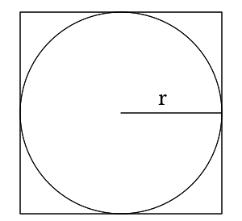

Monte Carlo Integration
Monte Carlo methods were some of the first methods I ever used for research, and when I learned about them, they seemed like some sort of magic. Their premise is simple: random numbers can be used to integrate arbitrary shapes embedded into other objects. Nowadays, "Monte Carlo" has become a bit of a catch-all term for methods that use random numbers to produce real results, but it all started as a straightforward method to integrate objects. No matter how you slice it, the idea seems a bit crazy at first. After all, random numbers are random. How could they possibly be used to find non-random values?
Well, imagine you have a square. The area of the square is simple, . Since it's a square, the and are the same, so the formula is technically just . If we embed a circle into the square with a radius (shown below), then its area is . For simplicity, we can also say that .

Now, let's say we want to find the area of the circle without an equation. As we said before, it's embedded in the square, so we should be able to find some ratio of the area of the square to the area of the circle:
This means,
So, if we can find the and we know , we should be able to easily find the . The question is, "How do we easily find the ?" Well, one way is with random sampling. We basically just pick a bunch of points randomly in the square, and each point is tested to see whether it's in the circle or not:
function in_circle(x_pos::Float64, y_pos::Float64)
# Setting radius to 1 for unit circle
radius = 1
return x_pos^2 + y_pos^2 < radius^2
end
(defn in-circle? [pv r]
"take a vector representing point and radius return true if the
point is inside the circle"
(< (->>
pv
(map #(* % %))
(reduce +))
(* r r)))
bool in_circle(double x, double y) {
return x * x + y * y < 1;
}
/**
* Check if the point (x, y) is within a circle of a given radius.
* @param x coordinate one
* @param y coordinate two
* @param r radius of the circle (optional)
* @return true if (x, y) is within the circle.
*/
inline bool in_circle(double x, double y, double r = 1) {
return x * x + y * y < r * r;
}
function inCircle(xPos, yPos) {
// Setting radius to 1 for unit circle
let radius = 1;
return xPos * xPos + yPos * yPos < radius * radius;
}
inCircle (x, y) = x^2 + y^2 < 1
fn in_circle(x: f64, y: f64, radius: f64) -> bool {
x * x + y * y < radius * radius
}
bool inCircle(real x, real y)
{
return x ^^ 2 + y ^^ 2 < 1.0;
}
func inCircle(x, y float64) bool {
return x*x+y*y < 1.0 // the radius of an unit circle is 1.0
}
in_circle <- function(x, y, radius = 1){
# Return True if the point is in the circle and False otherwise.
return((x*x + y*y) < radius*radius)
}
private static boolean inCircle(double x, double y) {
return x * x + y * y < 1;
}
func inCircle(x: Double, y: Double, radius: Double) -> Bool {
return (x*x) + (y*y) < radius*radius
}
def in_circle(x, y, radius = 1):
"""Return True if the point is in the circle and False otherwise."""
return (x*x + y*y) < radius*radius
public bool IsInMe(Point point) => Math.Pow(point.X, 2) + Math.Pow(point.Y, 2) < Math.Pow(Radius, 2);
proc in_circle(x, y, radius: float): bool =
return x * x + y * y < radius * radius
def in_circle(x, y, radius=1)
# Check if coords are in circle via Pythagorean Thm
return (x*x + y*y) < radius*radius
end
FUNCTION in_circle(pos_x, pos_y, r)
IMPLICIT NONE
REAL(16), INTENT(IN) :: pos_x, pos_y, r
LOGICAL :: in_circle
in_circle = (pos_x ** 2 + pos_y ** 2) < r ** 2
END FUNCTION in_circle
[ ! in-circle check
[ 2 ^ ] bi@ + ! get the distance from the center
1 < ! see if it's less than the radius
]
❗️ 📥 point ☝️ ➡️ 👌 🍇
📪 point❗️ ➡️ point_x
📫 point❗️ ➡️ point_y
↩️ 🤜point_x ✖️ point_x ➕ point_y ✖️ point_y🤛 ◀️ 🤜radius ✖️ radius🤛
🍉
function in_circle(float $positionX, float $positionY, float $radius = 1): bool
{
return pow($positionX, 2) + pow($positionY, 2) < pow($radius, 2);
}
local function in_circle(x, y)
return x*x + y*y <= 1
end
(define (in_circle x y)
(< (+ (sqr x) (sqr y)) 1)
)
def inCircle(x: Double, y: Double) = x * x + y * y < 1
(defun in-circle-p (x y)
"Checks if a point is in a unit circle"
(< (+ (* x x) (* y y)) 1))
# xmm0 - x
# xmm1 - y
# RET rax - bool
in_circle:
mulsd xmm0, xmm0 # Calculate x * x + y * y
mulsd xmm1, xmm1
addsd xmm0, xmm1
movsd xmm1, one # Set circle radius to 1
xor rax, rax
comisd xmm1, xmm0 # Return bool xmm0 < xmm1
seta al
ret
inCircle() {
local ret
local mag
((ret = 0))
if (($1 ** 2 + $2 ** 2 < 1073676289)); then # 1073676289 = 32767 ** 2
((ret = 1))
fi
printf "%d" $ret
}
private fun inCircle(x: Double, y: Double, radius: Double = 1.0) = (x * x + y * y) < radius * radius
If it's in the circle, we increase an internal count by one, and in the end,
If we use a small number of points, this will only give us a rough approximation, but as we start adding more and more points, the approximation becomes much, much better (as shown below)!

The true power of Monte Carlo comes from the fact that it can be used to integrate literally any object that can be embedded into the square.
As long as you can write some function to tell whether the provided point is inside the shape you want (like in_circle() in this case), you can use Monte Carlo integration!
This is obviously an incredibly powerful tool and has been used time and time again for many different areas of physics and engineering.
I can guarantee that we will see similar methods crop up all over the place in the future!
Video Explanation
Here is a video describing Monte Carlo integration:
Example Code
Monte Carlo methods are famous for their simplicity. It doesn't take too many lines to get something simple going. Here, we are just integrating a circle, like we described above; however, there is a small twist and trick. Instead of calculating the area of the circle, we are instead trying to find the value of , and rather than integrating the entire circle, we are only integrating the upper right quadrant of the circle from . This saves a bit of computation time, but also requires us to multiply our output by .
That's all there is to it! Feel free to submit your version via pull request, and thanks for reading!
# function to determine whether an x, y point is in the unit circle
function in_circle(x_pos::Float64, y_pos::Float64)
# Setting radius to 1 for unit circle
radius = 1
return x_pos^2 + y_pos^2 < radius^2
end
# function to integrate a unit circle to find pi via monte_carlo
function monte_carlo(n::Int64)
pi_count = 0
for i = 1:n
point_x = rand()
point_y = rand()
if (in_circle(point_x, point_y))
pi_count += 1
end
end
# This is using a quarter of the unit sphere in a 1x1 box.
# The formula is pi = (box_length^2 / radius^2) * (pi_count / n), but we
# are only using the upper quadrant and the unit circle, so we can use
# 4*pi_count/n instead
pi_estimate = 4*pi_count/n
println("The pi estimate is: ", pi_estimate)
println("Percent error is: ", signif(100 * abs(pi_estimate - pi) / pi, 3), " %")
end
monte_carlo(10000000)
(ns monte-carlo.core)
(defn in-circle? [pv r]
"take a vector representing point and radius return true if the
point is inside the circle"
(< (->>
pv
(map #(* % %))
(reduce +))
(* r r)))
(defn rand-point [r]
"return a random point from (0,0) inclusive to (r,r) exclusive"
(repeatedly 2 #(rand r)))
(defn monte-carlo [n r]
"take the number of random points and radius return an estimate to
pi"
(*' 4 (/ n)
(loop [i n count 0]
(if (zero? i)
count
(recur (dec i)
(if (in-circle? (rand-point r) r)
(inc count)
count))))))
(defn -main []
(let [constant-pi Math/PI
computed-pi (monte-carlo 10000000 2) ;; this may take some time on lower end machines
difference (Math/abs (- constant-pi computed-pi))
error (* 100 (/ difference constant-pi))]
(println "world's PI: " constant-pi
",our PI: " (double computed-pi)
",error: " error)))
#include <math.h>
#include <stdio.h>
#include <stdbool.h>
#include <stdlib.h>
#include <time.h>
bool in_circle(double x, double y) {
return x * x + y * y < 1;
}
double monte_carlo(unsigned int samples) {
unsigned int count = 0;
for (unsigned int i = 0; i < samples; ++i) {
double x = (double)rand() / RAND_MAX;
double y = (double)rand() / RAND_MAX;
if (in_circle(x, y)) {
count += 1;
}
}
return 4.0 * count / samples;
}
int main() {
srand(time(NULL));
double estimate = monte_carlo(1000000);
printf("The estimate of pi is %g\n", estimate);
printf("Percentage error: %0.2f%%\n", 100 * fabs(M_PI - estimate) / M_PI);
return 0;
}
#include <iostream>
#include <cstdlib>
#include <random>
constexpr double PI = 3.14159265358979323846264338;
/**
* Check if the point (x, y) is within a circle of a given radius.
* @param x coordinate one
* @param y coordinate two
* @param r radius of the circle (optional)
* @return true if (x, y) is within the circle.
*/
inline bool in_circle(double x, double y, double r = 1) {
return x * x + y * y < r * r;
}
/**
* Return an estimate of PI using Monte Carlo integration.
* @param samples number of iterations to use
* @return estimate of pi
*/
double monte_carlo_pi(unsigned samples) {
static std::default_random_engine generator;
static std::uniform_real_distribution<double> dist(0, 1);
unsigned count = 0;
for (unsigned i = 0; i < samples; ++i) {
double x = dist(generator);
double y = dist(generator);
if (in_circle(x, y))
++count;
}
return 4.0 * count / samples;
}
int main() {
unsigned samples;
std::cout << "Enter samples to use: ";
std::cin >> samples;
double pi_estimate = monte_carlo_pi(samples);
std::cout << "Pi = " << pi_estimate << '\n';
std::cout << "Percent error is: " << 100 * std::abs(pi_estimate - PI) / PI << " %\n";
}
// submitted by xam4lor
function inCircle(xPos, yPos) {
// Setting radius to 1 for unit circle
let radius = 1;
return xPos * xPos + yPos * yPos < radius * radius;
}
function monteCarlo(n) {
let piCount = 0;
for (let i = 0; i < n; i++) {
const pointX = Math.random();
const pointY = Math.random();
if (inCircle(pointX, pointY)) {
piCount++;
}
}
// This is using a quarter of the unit sphere in a 1x1 box.
// The formula is pi = (boxLength^2 / radius^2) * (piCount / n), but we
// are only using the upper quadrant and the unit circle, so we can use
// 4*piCount/n instead
// piEstimate = 4*piCount/n
const piEstimate = 4 * piCount / n;
console.log('Percent error is: %s%', 100 * Math.abs(piEstimate - Math.PI) / Math.PI);
}
monteCarlo(100000000);
import System.Random
monteCarloPi :: RandomGen g => g -> Int -> Float
monteCarloPi g n = count $ filter inCircle $ makePairs
where makePairs = take n $ toPair (randomRs (0, 1) g :: [Float])
toPair (x:y:rest) = (x, y) : toPair rest
inCircle (x, y) = x^2 + y^2 < 1
count l = 4 * fromIntegral (length l) / fromIntegral n
main = do
g <- newStdGen
let p = monteCarloPi g 100000
putStrLn $ "Estimated pi: " ++ show p
putStrLn $ "Percent error: " ++ show (100 * abs (pi - p) / pi)
// Submitted by jess 3jane
extern crate rand;
use std::f64::consts::PI;
fn in_circle(x: f64, y: f64, radius: f64) -> bool {
x * x + y * y < radius * radius
}
fn monte_carlo(n: i64) -> f64 {
let mut count = 0;
for _ in 0..n {
let x = rand::random();
let y = rand::random();
if in_circle(x, y, 1.0) {
count += 1;
}
}
// return our pi estimate
(4 * count) as f64 / n as f64
}
fn main() {
let pi_estimate = monte_carlo(10000000);
println!(
"Percent error is {:.3}%",
(100.0 * (pi_estimate - PI).abs() / PI)
);
}
///Returns true if a point (x, y) is in the circle with radius r
bool inCircle(real x, real y)
{
return x ^^ 2 + y ^^ 2 < 1.0;
}
///Calculate pi using monte carlo
real monteCarloPI(ulong n)
{
import std.algorithm : count;
import std.random : uniform01;
import std.range : generate, take;
import std.typecons : tuple;
auto piCount = generate(() => tuple!("x", "y")(uniform01, uniform01))
.take(n)
.count!(a => inCircle(a.x, a.y));
return piCount * 4.0 / n;
}
void main()
{
import std.math : abs, PI;
import std.stdio : writeln;
auto p = monteCarloPI(100_000);
writeln("Estimated pi: ", p);
writeln("Percent error: ", abs(p - PI) * 100 / PI);
}
// Submitted by Chinmaya Mahesh (chin123)
package main
import (
"fmt"
"math"
"math/rand"
"time"
)
func inCircle(x, y float64) bool {
return x*x+y*y < 1.0 // the radius of an unit circle is 1.0
}
func monteCarlo(samples int) {
count := 0
s := rand.NewSource(time.Now().UnixNano())
r := rand.New(s)
for i := 0; i < samples; i++ {
x, y := r.Float64(), r.Float64()
if inCircle(x, y) {
count += 1
}
}
estimate := 4.0 * float64(count) / float64(samples)
fmt.Println("The estimate of pi is", estimate)
fmt.Printf("Which has an error of %f%%\n", 100*math.Abs(math.Pi-estimate)/math.Pi)
}
func main() {
monteCarlo(10000000)
}
in_circle <- function(x, y, radius = 1){
# Return True if the point is in the circle and False otherwise.
return((x*x + y*y) < radius*radius)
}
monte_carlo <- function(n_samples, radius = 1){
# Return the estimate of pi using the monte carlo algorithm.
# Sample x, y from the uniform distribution
x <- runif(n_samples, 0, radius)
y <- runif(n_samples, 0, radius)
# Count the number of points inside the circle
in_circle_count <- sum(in_circle(x, y, radius))
# Since we've generated points in upper left quadrant ([0,radius], [0,])
# We need to multiply the number of points by 4
pi_estimate <- 4 * in_circle_count / n_samples
return(pi_estimate)
}
pi_estimate <- monte_carlo(10000000)
percent_error <- abs(pi - pi_estimate)/pi
print(paste("The estimate of pi is: ", formatC(pi_estimate)))
print(paste("The percent error is:: ", formatC(percent_error)))
import java.util.Random;
public class MonteCarlo {
public static void main(String[] args) {
double piEstimation = monteCarlo(1000);
System.out.println("Estimated pi value: " + piEstimation);
System.out.printf("Percent error: " + 100 * Math.abs(piEstimation - Math.PI) / Math.PI);
}
// function to check whether point (x,y) is in unit circle
private static boolean inCircle(double x, double y) {
return x * x + y * y < 1;
}
// function to calculate estimation of pi
public static double monteCarlo(int samples) {
int piCount = 0;
Random random = new Random();
for (int i = 0; i < samples; i++) {
double x = random.nextDouble();
double y = random.nextDouble();
if (inCircle(x, y)) {
piCount++;
}
}
return 4.0 * piCount / samples;
}
}
func inCircle(x: Double, y: Double, radius: Double) -> Bool {
return (x*x) + (y*y) < radius*radius
}
func monteCarlo(n: Int) -> Double {
let radius: Double = 1
var piCount = 0
var randX: Double
var randY: Double
for _ in 0...n {
randX = Double.random(in: 0..<radius)
randY = Double.random(in: 0..<radius)
if(inCircle(x: randX, y: randY, radius: radius)) {
piCount += 1
}
}
let piEstimate = Double(4 * piCount)/(Double(n))
return piEstimate
}
func main() {
let piEstimate = monteCarlo(n: 10000)
print("Pi estimate is: ", piEstimate)
print("Percent error is: \(100 * abs(piEstimate - Double.pi)/Double.pi)%")
}
main()
import math
import random
def in_circle(x, y, radius = 1):
"""Return True if the point is in the circle and False otherwise."""
return (x*x + y*y) < radius*radius
def monte_carlo(n_samples, radius = 1):
"""Return the estimate of pi using the monte carlo algorithm."""
in_circle_count = 0
for i in range(n_samples):
# Sample x, y from the uniform distribution
x = random.uniform(0, radius)
y = random.uniform(0, radius)
# Count the number of points inside the circle
if(in_circle(x, y, radius)):
in_circle_count += 1
# Since we've generated points in upper left quadrant ([0,radius], [0, radius])
# We need to multiply the number of points by 4
pi_estimate = 4 * in_circle_count / (n_samples)
return pi_estimate
if __name__ == '__main__':
pi_estimate = monte_carlo(100000)
percent_error = 100*abs(math.pi - pi_estimate)/math.pi
print("The estimate of pi is: {:.3f}".format(pi_estimate))
print("The percent error is: {:.3f}".format(percent_error))
MonteCarlo.cs
using System;
namespace MonteCarloIntegration
{
public class MonteCarlo
{
public double Run(int samples)
{
var circle = new Circle(1.0);
var count = 0;
var random = new Random();
for (int i = 0; i < samples; i++)
{
var point = new Point(random.NextDouble(), random.NextDouble());
if (circle.IsInMe(point))
count++;
}
return 4.0 * count / samples;
}
}
}
Circle.cs
using System;
namespace MonteCarloIntegration
{
public struct Point
{
public double X { get; set; }
public double Y { get; set; }
public Point(double x, double y)
{
this.X = x;
this.Y = y;
}
}
public class Circle
{
public double Radius { get; private set; }
public Circle(double radius) => this.Radius = Math.Abs(radius);
public bool IsInMe(Point point) => Math.Pow(point.X, 2) + Math.Pow(point.Y, 2) < Math.Pow(Radius, 2);
}
}
Program.cs
using System;
namespace MonteCarloIntegration
{
class Program
{
static void Main(string[] args)
{
var monteCarlo = new MonteCarlo();
System.Console.WriteLine("Running with 10,000,000 samples.");
var piEstimate = monteCarlo.Run(10000000);
System.Console.WriteLine($"The estimate of pi is: {piEstimate}");
System.Console.WriteLine($"The percent error is: {Math.Abs(piEstimate - Math.PI) / Math.PI * 100}%");
}
}
}
import random
import math
randomize()
proc in_circle(x, y, radius: float): bool =
return x * x + y * y < radius * radius
proc monte_carlo(samples: int): float =
const radius: float = 1
var count: int = 0
for i in 0 .. < samples:
let
x: float = random(radius)
y: float = random(radius)
if in_circle(x, y, radius):
count += 1
let pi_estimate: float = 4 * count / samples
return pi_estimate
let estimate: float = monte_carlo(1000000)
echo "the estimate of pi is ", estimate
echo "percent error: ", 100 * (abs(estimate - PI)/PI)
def in_circle(x, y, radius=1)
# Check if coords are in circle via Pythagorean Thm
return (x*x + y*y) < radius*radius
end
def monte_carlo(n_samples, radius=1)
# estimate pi via monte carlo sampling
in_circle_count = 0.0
for _ in 0...n_samples
# randomly choose coords within square
x = rand()*radius
y = rand()*radius
if in_circle(x, y, radius)
in_circle_count += 1
end
end
# circle area is pi*r^2 and rect area is 4r^2
# ratio between the two is then pi/4 so multiply by 4 to get pi
return 4 * (in_circle_count / n_samples)
end
# Main
pi_estimate = monte_carlo(100000)
percent_error = 100 * (pi_estimate - Math::PI).abs / Math::PI
puts "The estimate of pi is: #{pi_estimate.round(3)}"
puts "The percent error is: #{percent_error.round(3)}"
FUNCTION in_circle(pos_x, pos_y, r)
IMPLICIT NONE
REAL(16), INTENT(IN) :: pos_x, pos_y, r
LOGICAL :: in_circle
in_circle = (pos_x ** 2 + pos_y ** 2) < r ** 2
END FUNCTION in_circle
PROGRAM monte_carlo
IMPLICIT NONE
INTERFACE
FUNCTION in_circle(pos_x, pos_y, r)
IMPLICIT NONE
REAL(16), INTENT(IN) :: pos_x, pos_y, r
LOGICAL :: in_circle
END FUNCTION in_circle
END INTERFACE
INTEGER :: i,n
REAL(16) :: pos_x,pos_y, r, pi_est, pi_count, pi_error, pi
! Calculate Pi from trigonometric functions as reference
pi = DACOS(-1.d0)
n = 1000000
r = 1d0
pos_x = 0d0
pos_y = 0d0
pi_count = 0d0
DO i=0,n
CALL RANDOM_NUMBER(pos_x)
CALL RANDOM_NUMBER(pos_y)
IF (in_circle(pos_x, pos_y, r) .EQV. .TRUE.) THEN
pi_count = pi_count + 1d0
END IF
END DO
pi_est = 4d0 * pi_count / n
pi_error = 100d0 * (abs(pi_est - pi)/pi)
WRITE(*,'(A, F12.4)') 'The pi estimate is: ', pi_est
WRITE(*,'(A, F12.4, A)') 'Percent error is: ', pi_error, ' %'
END PROGRAM monte_carlo
USING: locals random math.ranges math.functions ;
:: monte-carlo ( n in-shape?: ( x y -- ? ) -- % )
n <iota> [ drop random-unit random-unit in-shape? call ] count n /
; inline
! Use the monte-carlo approximation to calculate pi
: monte-carlo-pi ( n -- pi-approx )
[ ! in-circle check
[ 2 ^ ] bi@ + ! get the distance from the center
1 < ! see if it's less than the radius
]
monte-carlo 4 * >float
;
USING: math.constants ;
10000000 monte-carlo-pi ! Approximate pi
dup . ! Print the approximation
pi - pi / 100 * >float abs . ! And the error margin
🐇 ☝️ 🍇
🖍🆕 x 💯
🖍🆕 y 💯
🆕 🍼 x 💯 🍼 y 💯 🍇 🍉
❗️ 📪 ➡️ 💯 🍇
↩️ x
🍉
❗️ 📫 ➡️ 💯 🍇
↩️ y
🍉
🍉
🐇 🌕 🍇
🖍🆕 radius 💯
🆕 given_radius 💯 🍇
🏧 given_radius❗️ ➡️ 🖍radius
🍉
❗️ 📥 point ☝️ ➡️ 👌 🍇
📪 point❗️ ➡️ point_x
📫 point❗️ ➡️ point_y
↩️ 🤜point_x ✖️ point_x ➕ point_y ✖️ point_y🤛 ◀️ 🤜radius ✖️ radius🤛
🍉
🍉
🐇 🤡 🍇
🐇 ❗️ 🏃♀️ samples 🔢 ➡️ 💯 🍇
🆕🌕🆕 1.0 ❗️ ➡️ circle
0 ➡️ 🖍🆕 count
🆕🎰🆕 ❗️ ➡️ random
🔂 i 🆕⏩⏩ 0 samples❗️ 🍇
🆕☝️🆕 💯 random❗️ 💯 random❗️❗️ ➡️ point
↪️ 📥 circle point❗️ 🍇
count ⬅️ ➕ 1
🍉
🍉
↩️ 4.0 ✖️ 💯 count❗️ ➗ 💯samples❗️
🍉
🍉
🏁 🍇
😀 🔤Running with 10,000,000 samples.🔤❗️
🏃♀️🐇🤡 10000000❗️ ➡️ pi_estimate
😀 🍪🔤The estimate of pi is: 🔤 🔡 pi_estimate 10❗🍪❗️
🏧 🤜pi_estimate ➖ 🥧🕊💯 ❗️🤛❗️ ➗ 🥧🕊💯 ❗️ ✖️ 100 ➡️ percent_error
😀 🍪🔤The percent error is: 🔤 🔡 percent_error 10❗ 🔤%🔤🍪❗️
🍉
<?php
declare(strict_types=1);
function in_circle(float $positionX, float $positionY, float $radius = 1): bool
{
return pow($positionX, 2) + pow($positionY, 2) < pow($radius, 2);
}
function random_zero_to_one(): float
{
return mt_rand() / mt_getrandmax();
}
function monte_carlo(int $samples, float $radius = 1): float
{
$inCircleCount = 0;
for ($i = 0; $i < $samples; $i++) {
if (in_circle(random_zero_to_one() * $radius, random_zero_to_one() * $radius, $radius)) {
$inCircleCount++;
}
}
return 4 * $inCircleCount / $samples;
}
$piEstimate = monte_carlo(10000000);
$percentError = abs($piEstimate - pi()) / pi() * 100;
printf('The estimate of PI is: %s', $piEstimate);
echo PHP_EOL;
printf('The percent error is: %s', $percentError);
echo PHP_EOL;
local function in_circle(x, y)
return x*x + y*y <= 1
end
function monte_carlo(nsamples)
local count = 0
for i = 1,nsamples do
if in_circle(math.random(), math.random()) then
count = count + 1
end
end
return 4 * count/nsamples
end
local pi = monte_carlo(10000000)
print("Estimate: " .. pi)
print(("Error: %.2f%%"):format(100*math.abs(pi-math.pi)/math.pi))
#lang racket
(define (in_circle x y)
(< (+ (sqr x) (sqr y)) 1)
)
(define (monte_carlo_pi n)
(* (/ (local ((define (monte_carlo* n count)
(if (= n 0)
count
(monte_carlo_pi* (sub1 n)
(if (in_circle (random) (random))
(add1 count)
count
)
)
)
)) (monte_carlo_pi* n 0)
) n) 4)
)
(display (monte_carlo_pi 1000))
object MonteCarlo {
def inCircle(x: Double, y: Double) = x * x + y * y < 1
def monteCarloPi(samples: Int) = {
def randCoord = math.random() * 2 - 1
var pointCount = 0
for (_ <- 0 to samples)
if (inCircle(randCoord, randCoord))
pointCount += 1
4.0 * pointCount / samples
}
def main(args: Array[String]): Unit = {
val approxPi = monteCarloPi(1000)
println("Estimated pi value: " + approxPi)
println("Percent error: " + 100 * Math.abs(approxPi - Math.PI) / Math.PI)
}
}
;;;; Monte carlo integration to approximate pi
(defun in-circle-p (x y)
"Checks if a point is in a unit circle"
(< (+ (* x x) (* y y)) 1))
(defun monte-carlo (samples)
"Returns an approximation of pi"
(loop repeat samples
with count = 0
do
(when (in-circle-p (random 1.0) (random 1.0))
(incf count))
finally (return (* (/ count samples) 4.0))))
(defvar pi-estimate (monte-carlo 5000000))
(format t "Estimate: ~D ~%" pi-estimate)
(format t "Error: ~D%" (* (/ (abs (- pi-estimate pi)) pi) 100))
.intel_syntax noprefix
.section .rodata
pi: .double 3.141592653589793
one: .double 1.0
four: .double 4.0
hundred: .double 100.0
rand_max: .long 4290772992
.long 1105199103
fabs_const: .long 4294967295
.long 2147483647
.long 0
.long 0
estimate_fmt: .string "The estaimate of pi is %lf\n"
error_fmt: .string "Percentage error: %0.2f\n"
.section .text
.global main
.extern printf, srand, time, rand
# xmm0 - x
# xmm1 - y
# RET rax - bool
in_circle:
mulsd xmm0, xmm0 # Calculate x * x + y * y
mulsd xmm1, xmm1
addsd xmm0, xmm1
movsd xmm1, one # Set circle radius to 1
xor rax, rax
comisd xmm1, xmm0 # Return bool xmm0 < xmm1
seta al
ret
# rdi - samples
# RET xmm0 - estimate
monte_carlo:
pxor xmm2, xmm2 # Setting it to zero for loop
cvtsi2sd xmm3, rdi # From int to double
pxor xmm4, xmm4 # Setting to zero for counter
monte_carlo_iter:
comisd xmm2, xmm3 # Check if we went through all samples
je monte_carlo_return
call rand # Get random point in the first quartile
cvtsi2sd xmm0, rax
divsd xmm0, rand_max
call rand
cvtsi2sd xmm1, rax
divsd xmm1, rand_max
call in_circle # Check if its in the circle
test rax, rax
jz monte_carlo_false
addsd xmm4, one # if so increment counter
monte_carlo_false:
addsd xmm2, one
jmp monte_carlo_iter
monte_carlo_return:
mulsd xmm4, four # Return estimate
divsd xmm4, xmm2
movsd xmm0, xmm4
ret
main:
push rbp
sub rsp, 16
mov rdi, 0
call time
mov rdi, rax
call srand
mov rdi, 1000000
call monte_carlo
movsd QWORD PTR [rsp], xmm0 # Save estimate to stack
mov rdi, OFFSET estimate_fmt # Print estimate
mov rax, 1
call printf
movsd xmm0, QWORD PTR [rsp] # Get estimate from stack
movsd xmm1, pi # Calculate fabs(M_PI - estimate)
subsd xmm0, xmm1
movq xmm1, fabs_const
andpd xmm0, xmm1
divsd xmm0, pi # Print percentage error on pi
mulsd xmm0, hundred
mov rdi, OFFSET error_fmt
mov rax, 1
call printf
add rsp, 16
pop rbp
ret
#!/usr/bin/env bash
inCircle() {
local ret
local mag
((ret = 0))
if (($1 ** 2 + $2 ** 2 < 1073676289)); then # 1073676289 = 32767 ** 2
((ret = 1))
fi
printf "%d" $ret
}
monteCarlo() {
local count
local i
((count = 0))
for ((i = 0; i < $1; i++)); do
if (($(inCircle RANDOM RANDOM) == 1)); then
((count++))
fi
done
echo "scale = 8; 4 * $count / $1" | bc
}
est=$(monteCarlo 10000)
echo "The estimate of pi is $est"
echo "Percentage error: $(echo "scale = 8; 100 * sqrt( ( 1 - $est / (4*a(1)) ) ^ 2 )" | bc -l)"
import java.util.Random
private fun inCircle(x: Double, y: Double, radius: Double = 1.0) = (x * x + y * y) < radius * radius
fun monteCarlo(samples: Int): Double {
var piCount = 0
val random = Random()
for (i in 0 until samples) {
val x = random.nextDouble()
val y = random.nextDouble()
if (inCircle(x, y))
piCount++
}
return 4.0 * piCount / samples
}
fun main(args: Array<String>) {
val piEstimate = monteCarlo(100000)
println("Estimated pi value: $piEstimate")
val percentError = 100 * Math.abs(piEstimate - Math.PI) / Math.PI
println("Percent error: $percentError")
}
License
Code Examples
The code examples are licensed under the MIT license (found in LICENSE.md).
Text
The text of this chapter was written by James Schloss and is licensed under the Creative Commons Attribution-ShareAlike 4.0 International License.

Images/Graphics
- The image "squarecircle" was created by James Schloss and is licenced under the Creative Commons Attribution-ShareAlike 4.0 International License.
- The animation "simplemontecarlo" was created by James Schloss and is licenced under the Creative Commons Attribution-ShareAlike 4.0 International License.
{kind=link}
Pull Requests
After initial licensing (#560), the following pull requests have modified the text or graphics of this chapter:
- none